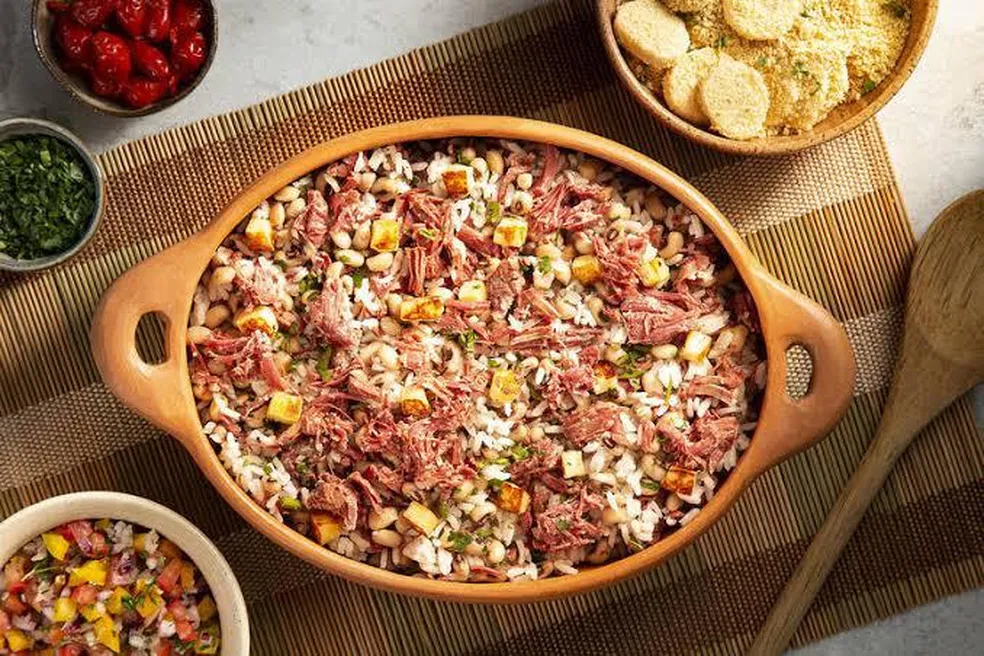
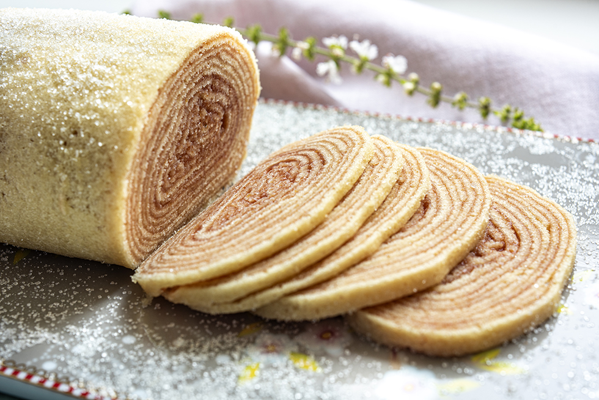

Delícia da Bahia feita com feijão-fradinho e vatapá.
Prato de frutos do mar com leite de coco e azeite de dendê.
Creme baiano de camarão com leite de coco.

Arroz e feijão combinados, típico do Nordeste.

Delícia pernambucana feita com camadas finas de bolo.
Doce cremoso feito de milho e leite condensado.
Prato leve e versátil feito com goma de mandioca.